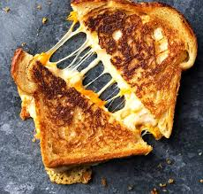

Grilled Cheese

Let's make Grilled Cheese!
We will be taking you step by step through the grilled cheese making process. You will learn what ingredients to use, how to prepare said ingredients for the dish, and the proper cooktime/temperature. Get that apron on, and your oven mitts handy because today we will be making a dish that the entire family will devour.
This recipe is simple enough for a novice, so let's dive in:
Ingredients:
- Bread: 2 slices of your favorite bread.
- Cheese: At least one slice of your favorite melting cheese i.e cheddar, colby-jack, mozzarella, american, etc... (for cheesier sandwich, add more slices).
- Butter Around one tablespoon.
- Spices: As desired but not manditory.
Steps:
- In a pan large enough to fit at least one slice of your bread. on medium heat, allow pan to heat up.
- Spread butter on one side of each slice of bread.
- Place buttered bread, butter-side down on heated pan.
- Place cheese slice(s) on top of toasting bread
- Place second slice of buttered bread, butter-side up on the cheese/toasting bread.
- When the bottom side is golden brown, flip the sandwich to the untoasted side.
- Allow to get golden brown on that side, as well.
- Remove from pan on to plate.
- Allow to sit for 2 minutes.
- Cut diagonal or across or not at all.
- Enjoy!